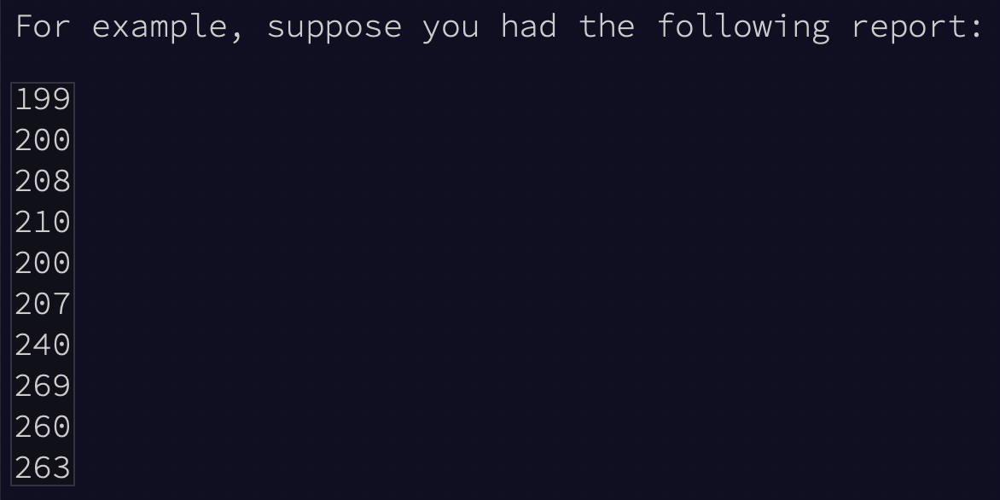
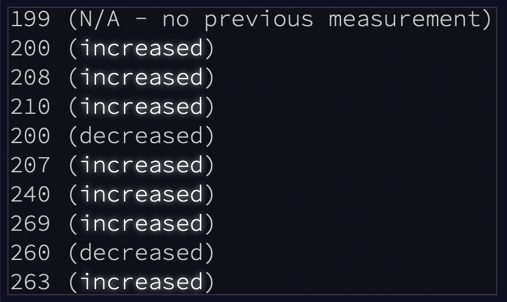
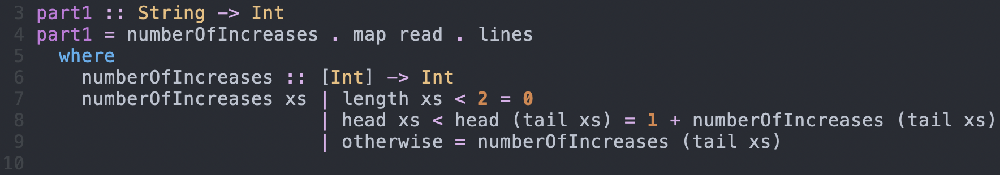
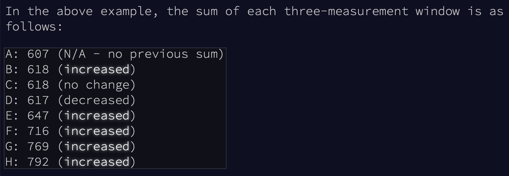
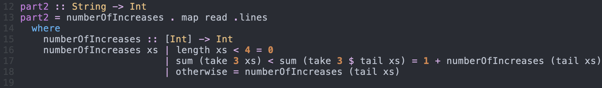

Day 1: Sonar Sweep
Как и в прошлые года Eric Wastl решил побаловать нас своими задачками в виде адвент календаря. Данный формат предполагает, что каждый день мы будем открывать новую задачу, приближая себя таким образом к рождеству и рождественским праздникам.

В этом году сигнал тревоги застал нас врасплох, пока мы спокойно плыли на корабле на рождественские праздники. Кажется кто-то из эльфов поскользнулся и отправил ключи от рождественской упряжки прямо на дно океана! Прежде чем ты осознал что происходит, эльфы уже подготовили субмарину, где ты как-то между делом и оказался. Наша субмарина покрыта рождественской подсветкой (потому что это рождественская субмарина), а также она имеет антенну, способную найти потерянные ключи, но только при условии если мы сможем получить 50 звездочек. Чтобы спасти рождество нам нужно получить эти звездочки до 25-го декабря!
Каждый день AoC содержит задачу, разбитую на две части. За правильное решение каждой части нам дают по одной звездочке.
Спускаясь на субмарине мы видим результат сканирования дна. Результатом сканирования является карта высот.

Чтобы быть более уверенными в успешности спуска, мы хотим знать как быстро меняется глубина впереди нас. Количество раз когда следующая считанная глубина была больше, чем предыдущая могло быть дать нам полезную информацию об этом.

Традиционно первый день является неким “Hello world” всего календаря, поэтому нам не составит решить эту проблему. Каждый день я буду писать две функции part1 и part2, которые должны решать первую и вторую часть задачи соответственно.

Функция numberOfIncreases подсчитывает количество увеличений во входном списке. Она разбирает 3 случая:
length xs < 2– входной массив слишком мал, чтобы сравнить два элемента, поэтому нужно вернуть 0head xs < head (tail xs)– первый элемент меньше чем второй элемент, добавляем 1 к результату и рекурсивно проверяем хвост спискаotherwise– пропускаем первый элемент без увеличения результата
Функция part1 разбивает входной файл на строчки (lines), конвертирует их в числа (read) и передает на вход numberOfIncreases. Рассчитываем результат отправляем и получаем первую звезду за сегодня!

После решения первой задаче в Advent Of Code открывается вторая, которая обычно основана на первой, на при этом должна быть чуть сложней.
Во второй части теперь нужно рассматривать серию из трех элементов как один элемент и считать разницу между их суммами.

Мы легко можем адаптировать решение первой задачи для второй. Вместо одного элемента мы будем брать take 3 элементов и суммировать их с помощью sum. Вся остальная логика остается похожей.

Отправляем на проверку и получаем заслуженную вторую звезду.

Полный код решения это задачи можно найти у меня в GitHub, а теперь время отпраздновать победу над первой задачей (не самой сложной, но все же).